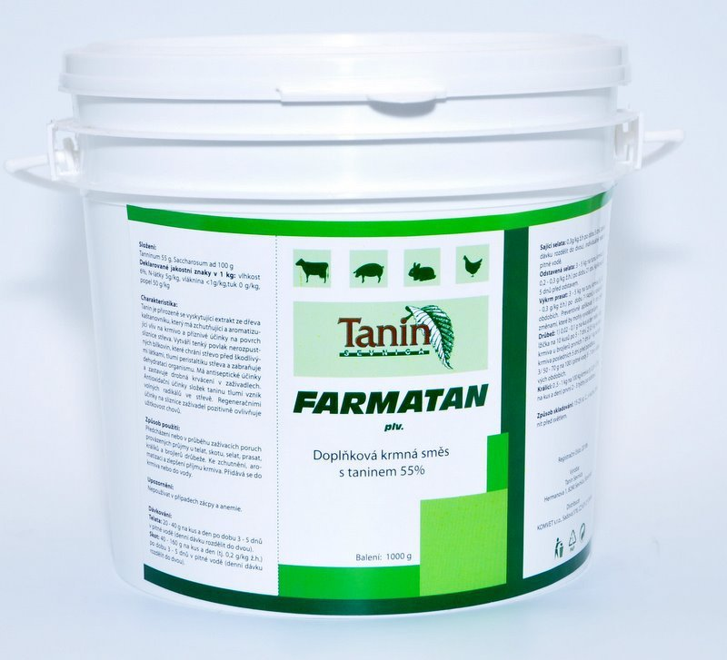

Composition
Each Kg contains:
Sodium salt of organic acid- 11 g
Sodium chloride- 4 g
Acetic acid- 7 g
Lignocelluloses- 7 g
Crude fiber q.s. to 1000 g
Indications
Increases milk production and improves milk quality
Increases fat % of milk
Reduces the incidence of diarrhea & mastitis
Protects intestinal mucosa
Improves growth and Feed Conversion Ratio
Dosage & Administration
Oral: Administer the product suspended in ½ to 1 liter of water or spray dispenser slowly from the bottle.
Curative treatment:
Adult cattle: 1Sachet every 12 hours for 3 days.
Young cattle: ½ Sachet every 12 hours for 3 days.
Sheep, goats: 25g every 12 hours for 3 days.
or as directed by the registered Veterinarian.
Storage
Store in a cool & dry place, protected from light.
Keep out of the reach of children.
Pack Size
100 gm